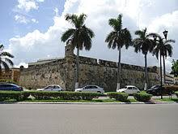
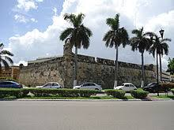

El Baluarte de San Carlos, fue el primero en ser construido como parte del sistema fortificado de San Francisco de Campeche. Al igual que los otros baluartes presenta una forma pentagonal. Su entrada principal es por medio de una rampa situada del lado de la calle 8. El nombre de este baluarte fue dado en honor al rey Carlos II. Posee un sótano con dos habitaciones que fungían como cuartos de pólvora o como cárcel. En este recinto se puede observar un aljibe y un silo que funcionaba como purguero y en donde se castigaba a los prisioneros. En el siglo XIX alojó a tropas locales. Aloja al Museo de la Ciudad.
 
